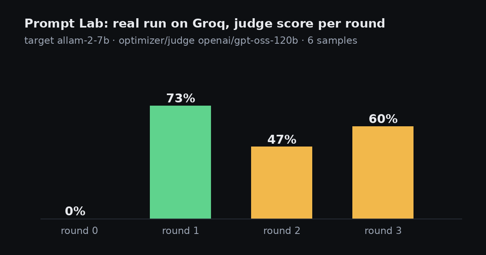

The Signal
AI innovation, read for what it means in practice. By Shashwat Kumar.

Editor's note · The brakes issue
Most of what shipped in AI over the past few weeks was not just a bigger model. It was the scaffolding around models: staged releases, intent tokens for payments, execution containers for agents, watermarks, usage policies. That is the part of the story I find most interesting, because it is where capability turns into something an institution can actually trust. This first issue of The Signal reads the month through that lens. Every fact is linked to its source; the analysis is mine.
Shashwat Kumar, Mumbai
From the workshop · Open source
Open-source projects I am building in public. MIT-licensed, early-stage, synthetic data only, and no results claimed beyond the bundled test cases.

Building an open India AI Index
An open harness that tests how language models handle Indian languages and Indian paperwork, and what each task costs in rupees. It has not scored a single model yet, and that is deliberate.

AgentGuard: brakes for agents that move money
If an agent can pay, it can be tricked into paying. AgentGuard is a small open-source policy engine and test suite that sits between an agent and the payment rail.

Ask Your Data, and show your working
Plain English in, SQL and a chart out, running locally on DuckDB. It works with no API key, and it always shows the query it ran.

Prompt Crucible: letting a model fix my prompt
An open, model-agnostic take on automatic prompt optimization. On a real six-ticket test it lifted a small model from 0% to 73% in one round, then two more rounds made it worse.
Frontiers · Quantum Computing & Physical Intelligence

In quantum, the verifier is now the story
IBM moved to the testing stage of DARPA's benchmarking programme, and Google researchers proposed a software trick against residual logical errors. The field is shifting from claims to independent checks.

Thirty homes, fifty-six percent, no partial credit
Figure's Helix 2.5 took a humanoid into 30 homes it had never seen. The most impressive thing about the announcement is how it measured itself.
Qubits vs noise
Push the physical error rate across the threshold and watch logical qubits get better, or worse.
The robot autonomy ladder
Trade autonomy against interventions and the sim-to-real gap.
Frontier Models

When the answer becomes an interface
GPT-6 in ChatGPT now answers with buttons, forms and charts. The output of a model is turning into a small piece of software, and that changes how we should judge it.

The falling price of a capable token
Anthropic's Haiku 5.5 and xAI's Grok 4.7 both lead with price and speed. Cheaper capable models change what is worth automating, and what is worth measuring.

Tokens per megawatt: the metric behind the machine
Microsoft is making its own Maia chips the primary inference system for its products, and framing the case in tokens per watt. The choice of metric tells you what the industry now optimises for.
Agents

Personal agents want a memory. Who audits it?
Meta's Muse Wonder pairs 'Active Memory' with 'Active Focus'. Memory is what makes an agent useful, and it is also what makes it a data-governance problem.

Agents are getting an operating system
Microsoft shipped execution containers for agents on Windows, NVIDIA put a petaflop in a laptop, and Google Cloud launched a 'universal agent for work'. The agent is moving from a chat window into the plumbing.
AI in Finance

Open Source

India & Emerging Markets

Quantum Computing
In quantum, the verifier is now the story
IBM moved to the testing stage of DARPA's benchmarking programme, and Google researchers proposed a software trick against residual logical errors. The field is shifting from claims to independent checks.

Quantum's factory turn
IonQ, Quantinuum, IBM's Anderon and D-Wave all made manufacturing news in five weeks. When an industry starts talking about tapeouts and wafer lots, it is preparing to be measured like one.

India's quantum kilometres, and what counts as one
The National Quantum Mission says it has crossed 1,000 km of quantum-secure communication in about three years. A free-space link test followed. The milestone is real progress; the definition of the metric matters.
Physical Intelligence
Thirty homes, fifty-six percent, no partial credit
Figure's Helix 2.5 took a humanoid into 30 homes it had never seen. The most impressive thing about the announcement is how it measured itself.

The robotaxi business learns to borrow
Waymo raised its first debt, began driverless testing in Detroit and announced Singapore for 2028. Autonomy is being financed and rolled out like infrastructure, city by city.

The humanoid hype gap, measured
Reports say Tesla is ramping Optimus production, while Google DeepMind's latest robotics model controls whole humanoid bodies. The distance between production targets and reliable work is the number to track.
In brief
- OpenAI 5 Oct 2026
Invisible text watermarking for eligible ChatGPT and Codex output in the EU; opt-in for API customers globally. Source
- OpenAI 6 Oct 2026
Published new mathematical results from an internal frontier model in a GitHub repository, with summaries of the model's reasoning and compute estimates. Source
- Anthropic 8 Oct 2026
2026 Usage Policy update takes effect 12 November, adding controls for autonomous physical actions and clarifying high-risk uses in health and finance. Source
- Google 8 Oct 2026
Gemini agent for Google Cloud customers, with model choice and built-in cost controls. Source
- IBM / DARPA 7 Oct 2026
IBM selected for Stage C of DARPA's Quantum Benchmarking Initiative; independent hardware testing begins. Source
- Waymo 6 Oct 2026
Singapore operations announced: testing in 2027, public autonomous rides targeted for 2028. Source
Archive
The Signal is an independent ReadSigil publication. Facts are attributed to their sources and linked; opinions are the author's own. Illustrations are original and generative; no company logos or imagery are used.